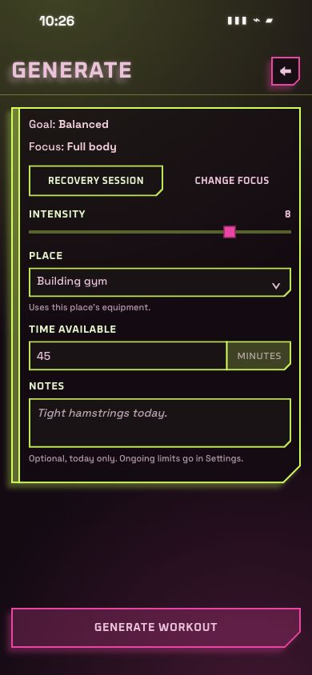

Curved scanlines, a soft edge, and a gentle vignette over the whole image.

The same preserved CLEAR screen in each view. Tune the glass using the controls; the workout form is a visual specimen.
Loading glass…
CLEAR / MATERIAL STUDY 02 / MOTION
A quiet, living texture over steady glass.
Curved scanlines, a soft edge, and a gentle vignette over the whole image.

The same preserved CLEAR screen in each view. Tune the glass using the controls; the workout form is a visual specimen.
Loading glass…